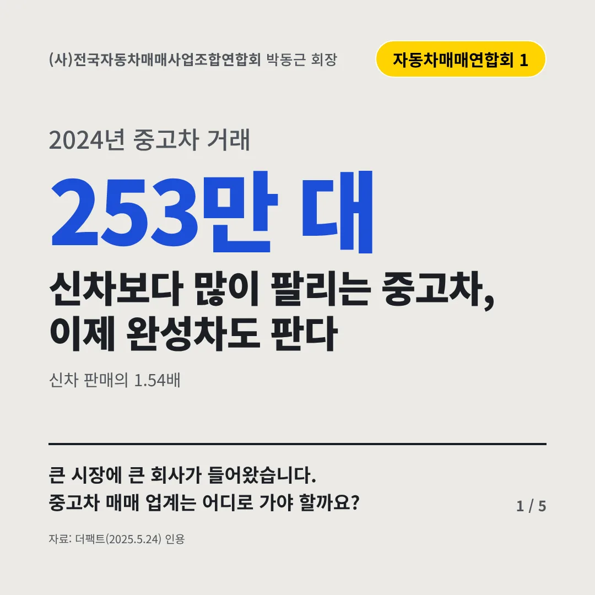
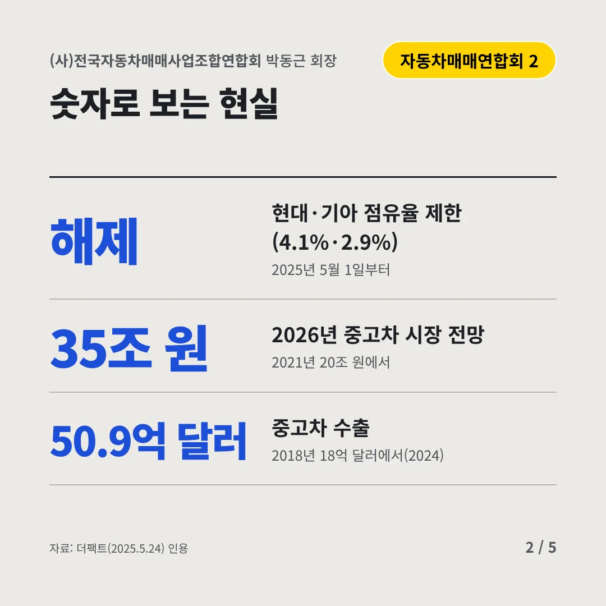
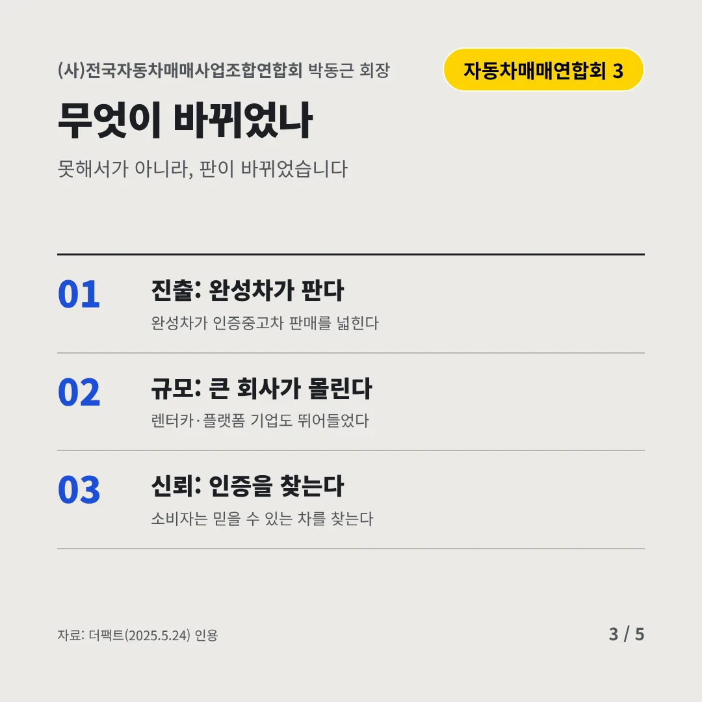
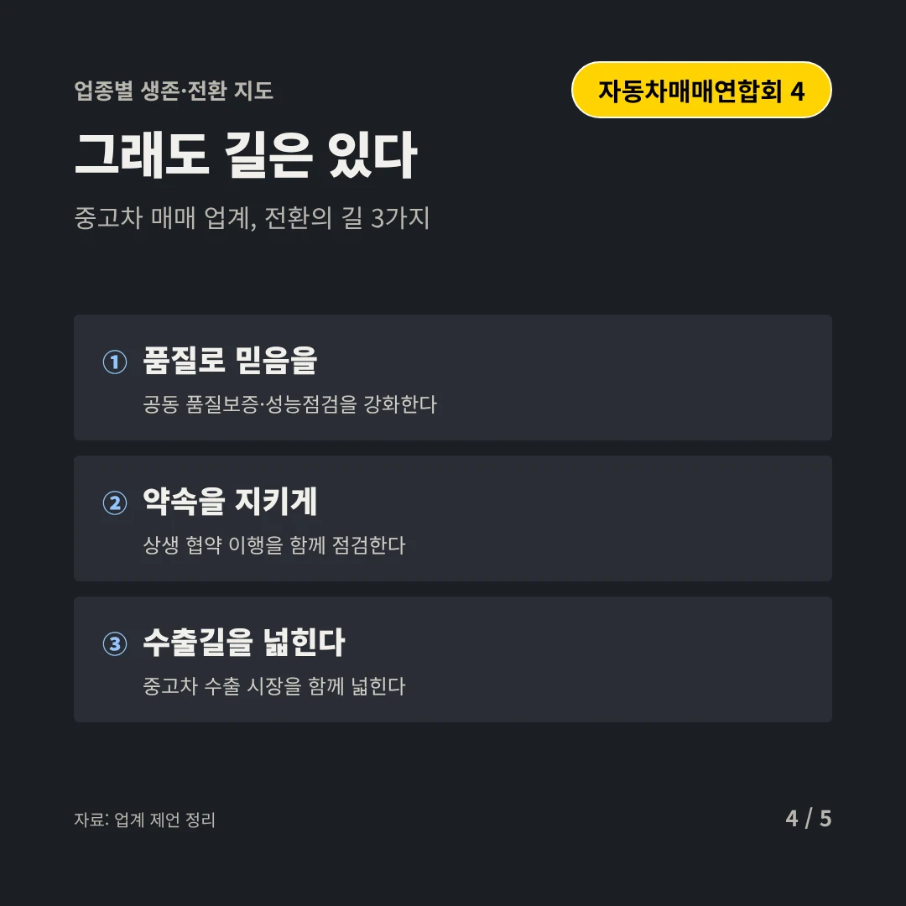
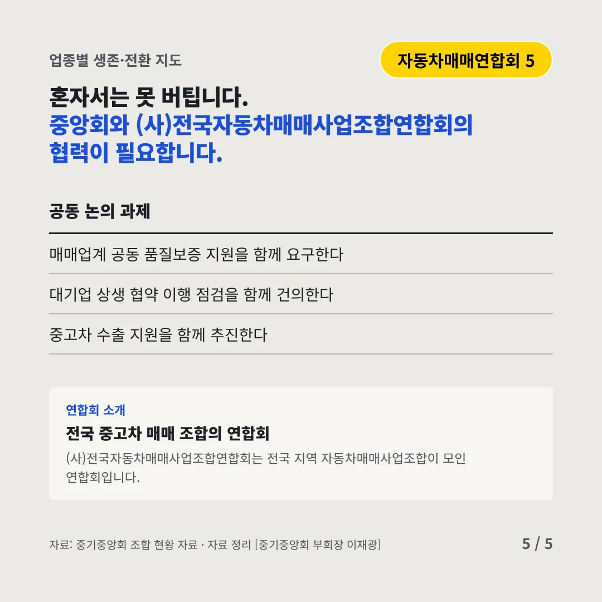
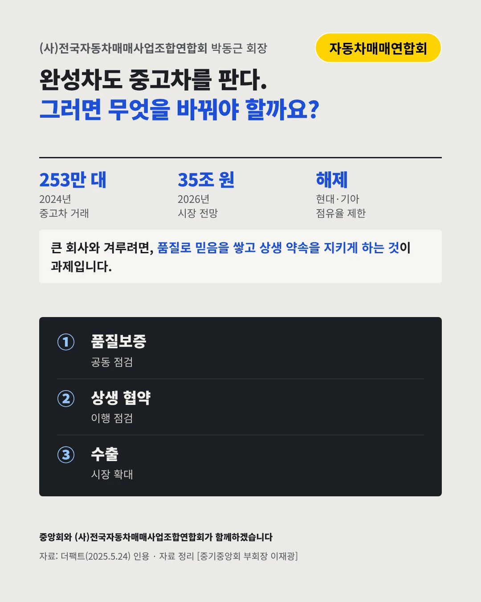

(사)전국자동차매매사업조합연합회
신차보다 많이 팔리는 중고차, 이제 완성차도 판다
253만 대 2024년 중고차 거래






큰 시장에 큰 회사가 들어왔습니다. 중고차 매매 업계는 어디로 가야 할까요?
숫자로 보는 현실
- 해제현대·기아 점유율 제한(4.1%·2.9%)2025년 5월 1일부터
- 35조 원2026년 중고차 시장 전망2021년 20조 원에서
- 50.9억 달러중고차 수출2018년 18억 달러에서(2024)
무엇이 바뀌었나
- 진출: 완성차가 판다완성차가 인증중고차 판매를 넓힌다
- 규모: 큰 회사가 몰린다렌터카·플랫폼 기업도 뛰어들었다
- 신뢰: 인증을 찾는다소비자는 믿을 수 있는 차를 찾는다
그래도 길은 있다
- 품질로 믿음을공동 품질보증·성능점검을 강화한다
- 약속을 지키게상생 협약 이행을 함께 점검한다
- 수출길을 넓힌다중고차 수출 시장을 함께 넓힌다
한 장 요약

연합회 소개
(사)전국자동차매매사업조합연합회는 전국 지역 자동차매매사업조합이 모인 연합회입니다.
자료: 더팩트(2025.5.24)